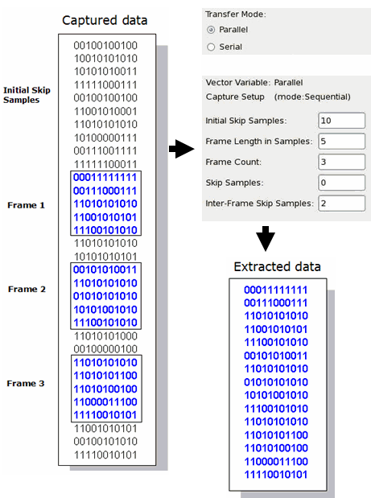
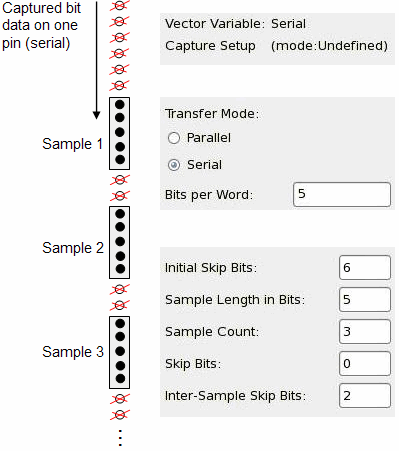

Creating a Digital Capture setup (3)
First select the Transfer Mode. The parameters vary depending on the Transfer Mode selection.
- Parallel: Transfers the captured data of more than one pin at once.
- Serial: Transfers the captured data of only one pin.
The Parallel Transfer Mode capture parameters are:
- The number of Samples per Word is always 1.
- Initial Skip Samples: The number of initial samples to be skipped.
- Frame Length in Samples: The number of read samples for each Vector Variable Pin which form one frame.
- Frame Count: The number of frames to be read.
- Skip Samples: The number of samples to be skipped after reading one sample. A value of 1 reads every second sample.
- Inter-Frame Skip Samples: The number of samples to be skipped between frames.
For example:

The Serial Transfer Mode capture parameters are:
- Bits per Word: The number of bits in a word. This can have consequences on the upload performance.The higher the value (max. 32) of Bits per Word, the faster the resulting upload performance.
- Initial Skip Bits: The number of initial bits to be skipped.
- Sample Length in Bits: The number of bits per sample.
- Sample Count: The number of samples.
- Skip Bits: The number of bits to be skipped after reading one bit. For example, a value of 1 reads every second bit from the memory (Bit 1, 3, 5, ...).
- Inter-Sample Skip Bits: The number of bits to be skipped between samples.
For serial transfer mode the unit is bits. N bits make up a sample. For example:

To see or hide the last two parameters, click Show/Hide More (for Sequential and undefined capture mode only).